1. Identifier
- Task: 2026-10-31-product-page-reservations-visibility-location
- Task path: C:\Users\karas\Desktop\swaptime\group-thing-app\.maister\tasks\development\2026-10-31-product-page-reservations-visibility-location
- Spec: C:\Users\karas\Desktop\swaptime\group-thing-app\.maister\tasks\development\2026-10-31-product-page-reservations-visibility-location\implementation\spec.md
- Date: 2026-11-01
- Git ref: bf55353 + uncommitted working tree, branch
feat/product-page-reservations - Tester: e2e-test-verifier (maister)
2. Test Environment
| Field | Value |
|---|---|
| Base URL | http://localhost:5173 (Vite dev server, /api proxied to uvicorn on 127.0.0.1:8080) |
| Browser | Playwright MCP Chromium |
| Viewport | 430×1400 for product/list pages (mobile). The first Moje rzeczy capture used the default desktop viewport |
| Auth context | Anonymous; A (owner/organizer, ORGANIZER role); B (GUEST with an RSVP on A's PUBLIC-circle term); C (GUEST, no shared context) |
| Test data | Seeded through the public API: 1 PUBLIC circle and 1 term on 2026-11-20 17:00 at "Szkoła Testowa"; 2 MANUAL locations; 4 listed items (GIFT, SWAP, GIFT→PRIVATE, GIFT→reserved) plus 1 draft; an organization with the EXCHANGE layout. DB migrated to 0077 (0074–0077 applied during this run) |
3. Executive Summary
Verdict: ⚠️ GO WITH CAVEATS
| Metric | Count |
|---|---|
| Scenarios planned | 12 |
| Scenarios executed | 12 |
| Passed | 12 |
| Failed | 0 |
| Blocked | 0 |
| Pass rate | 100% |
| Critical issues | 0 |
| Major issues | 0 |
| Minor issues | 1 |
| Cosmetic issues | 3 |
Every acceptance point in the brief was observed in the running app.
- Moje rzeczy: the inventory location is persisted, and the visibility toggle always sends
mode. - Product page by viewer: the owner sees the full address and "(widzisz tylko Ty)". Logged-in viewers see the place name only, with no address in the DOM or the payload. Anonymous viewers get no location block and see the "Chcesz tę rzecz?" gate.
- Personal pickup: a personal GIFT reservation opens the ITEM chat, and both parties can settle it from the product page.
- Tiles: intent and reserved pills follow the name rules (by name / "przez Ciebie" / anonymous without a name).
- Counts: organizer counts are GIFT 0 / SWAP 1 / RESERVED 1 and owner-items counts include reserved items.
- PRIVATE items: a stranger gets 404 on every item read and on take, and the item is absent from every public list.
The issues are copy and layout polish only.
4. Verification Scenarios
4.1 Moje rzeczy: inventory location and visibility toggle — ✅ Passed
- User story / acceptance criterion: R1.3, R12.3, R12.4; mockup
screen:my-items-location-visibility - Preconditions: A is logged in through the login form and has 4 listed items, 1 draft and 2 own locations.
| # | Action | Expected | Actual | Status |
|---|---|---|---|---|
| 1 | Open /items | "📍 Gdzie są moje rzeczy?" picker with the privacy hint | Picker (combobox + "+ Dodaj nowe miejsce") and the exact hint copy are shown | ✅ |
| 2 | Select "Dom – Mokotów" | PUT /api/inventories/mine/location returns 200 | 200, location.name = "Dom – Mokotów"; after reload the picker keeps the value and shows the address under it | ✅ |
| 3 | Click 🔒 Prywatna on "F oferta" | Body carries the current mode plus visibility | Request {"mode":"GIFT","visibility":"PRIVATE"} → 200; aria-pressed="true"; hint "Prywatna: widoczna tylko w Twoich prywatnych grupach." | ✅ |
| 4 | Change the mode of the private item (Zamienię, then Oddam) | Mode-only body keeps visibility | Requests {"mode":"SWAP"} / {"mode":"GIFT"} → responses keep "visibility":"PRIVATE" | ✅ |
| 5 | Look at the draft item (no mode) | No toggle, "Ustaw tryb, żeby wybrać widoczność." | 5 cards, 4 toggles, 1 "Ustaw tryb…" hint | ✅ |
- Issues observed: None observed.
- Evidence:
screenshots/01-moje-rzeczy-initial.png,screenshots/02-moje-rzeczy-location-visibility.png - Acceptance criteria checklist:
- ☑ Location set through the LocationPicker and persisted
- ☑ Toggle shown only when a mode is set, with
aria-pressed - ☑ A visibility change always sends the mode; a mode change keeps the visibility

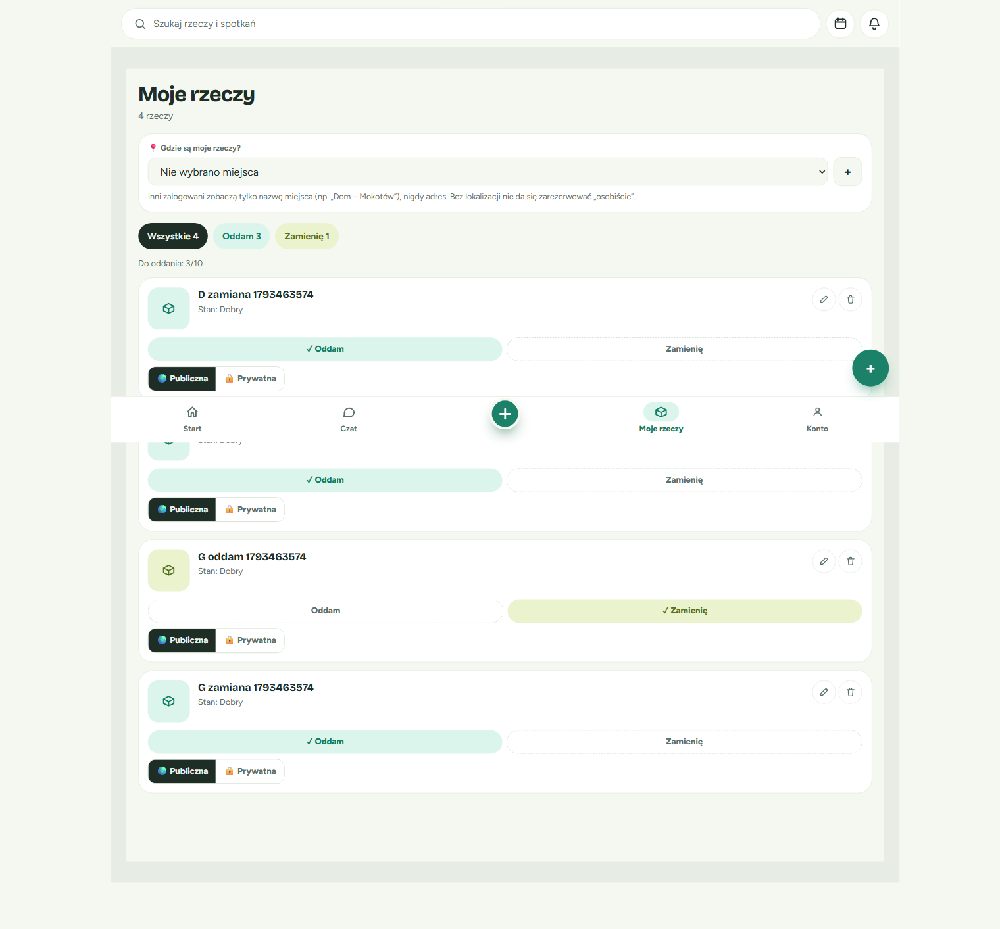

4.2 Product page, logged-in non-owner (3 actions, sheets) — ✅ Passed
- User story / acceptance criterion: R2.2–R2.4, R5.3–R5.7; mockups
screen:product-logged-in,screen:sheet-choose-term,screen:sheet-personal-pickup - Preconditions: B is logged in and has an RSVP on A's term; the GIFT item is available; A has a location.
| # | Action | Expected | Actual | Status |
|---|---|---|---|---|
| 1 | Open /product/{gift} | Location name only, "Dokładny adres ustalicie na czacie." | "Dom – Mokotów" + the hint. /actions.location = {name, formatted_address:null}; the address string is not in the DOM | ✅ |
| 2 | — | "Gdzie jeszcze można odebrać" list | "Terminy i wydarzenia, na których bywa Ania…", row "PT 20 LIS · Wymianka E2E · 📍 Szkoła Testowa · 17:00" | ✅ |
| 3 | — | "Jak chcesz odebrać?" with 3 enabled actions | Odbiorę osobiście / Wybieram termin / 💬 Napisz o przedmiocie, all enabled (personal_pickup_available:true, context eligible:true) | ✅ |
| 4 | Click "Wybieram termin" (GIFT) | Sheet "Wybierz termin odbioru" with the hint and a radio list | 1 radio, primary "Rezerwuję"; Esc closes it | ✅ |
| 5 | Same on the SWAP item | SWAP note + "Dalej: wybierz rzecz na zamianę" | Exact copy is shown; the ✕ close button is present | ✅ |
| 6 | Click "Odbiorę osobiście" (GIFT) | Sheet with the place name and the GIFT copy | "📍 Dom – Mokotów", the address-in-chat note, "Zarezerwujemy dla Ciebie … potwierdź przekazanie na tej stronie.", buttons "Rezerwuję i piszę do Ania…" / "Anuluj" (all type="button") | ✅ |
| 7 | C (no shared term) opens the SWAP item | "Wybieram termin" aria-disabled with the hint | aria-disabled="true" + aria-describedby → "Nie macie wspólnego terminu ani wydarzenia, na które jesteś zapisany(-a)."; a forced click opens no sheet | ✅ |
| 8 | C opens "Odbiorę osobiście" on SWAP | SWAP body copy | "Zaproponujesz zamianę za … Gdy … ją przyjmie i się wymienicie, potwierdźcie to na tej stronie." | ✅ |
- Issues observed: Cosmetic §5.4 C3 (GIFT term-sheet button label).
- Evidence:
screenshots/05-product-logged-in-3-actions.png,screenshots/06-sheet-choose-term.png,screenshots/31-sheet-choose-term-swap.png,screenshots/07-sheet-personal-pickup.png,screenshots/29-product-swap-stranger-term-disabled.png,screenshots/30-sheet-personal-pickup-swap.png - Acceptance criteria checklist:
- ☑ Location shown by name only to other logged-in viewers
- ☑ Read-only context list
- ☑ Three actions with correct enable/disable rules and hints
- ☑ Both sheets match the spec copy


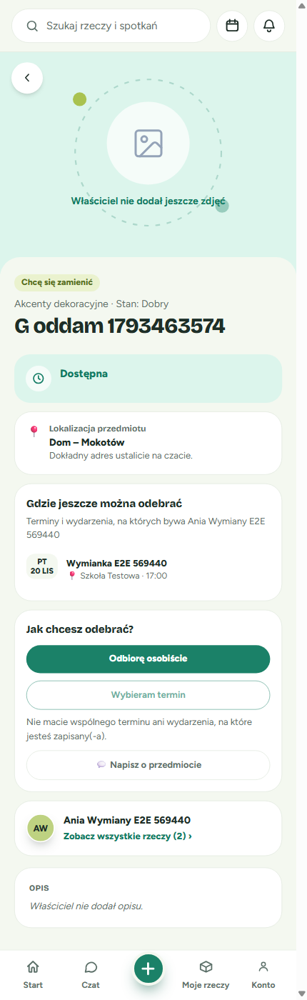

4.3 Personal GIFT reservation opens the ITEM chat — ✅ Passed
- User story / acceptance criterion: R3.1, R4, R5.7 ("On success the page opens the ITEM chat")
- Preconditions: As in 4.2, with the "Odbiór osobisty" sheet open.
| # | Action | Expected | Actual | Status |
|---|---|---|---|---|
| 1 | Click "Rezerwuję i piszę do Ania…" | POST /api/items/{id}/take with {context:{kind:"PERSONAL"}} | Request {"context":{"kind":"PERSONAL"},"reservation_type":"GIFT"} → 200 {…, "context":null} | ✅ |
| 2 | — | ITEM conversation opens | Navigated to /messages/{id}; header "📦 G zamiana… Rozmowa z: Ania E2E569440 · zobacz rzecz" | ✅ |
- Issues observed: None observed.
- Evidence:
screenshots/08-personal-reserve-chat-opened.png - Acceptance criteria checklist:
- ☑ Single take endpoint with the PERSONAL context ref
- ☑ Chat opens right after the reservation

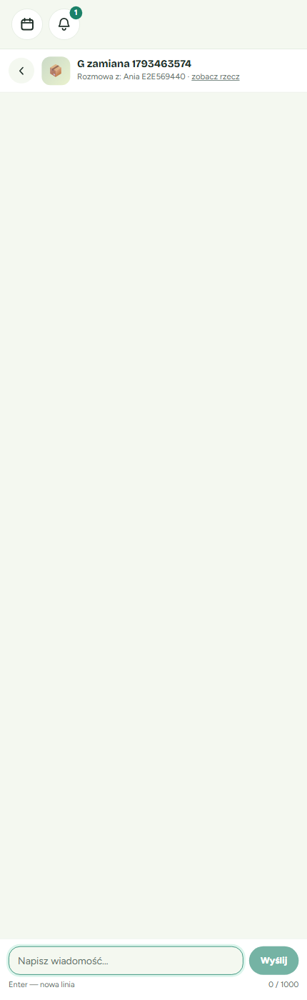
4.4 Party actions on the product page (receiver and giver) — ✅ Passed
- User story / acceptance criterion: R8.5, R8.6 (audit C1), R4.5
- Preconditions: There is an open personal GIFT reservation of A's item by B.
| # | Action | Expected | Actual | Status |
|---|---|---|---|---|
| 1 | B opens the product page | reserved view with "przez Ciebie", party wording, confirm + cancel | Badge "Zarezerwowana · przez Ciebie"; status "Zarezerwowana / Odbiór osobisty — szczegóły ustalają Ania… i Bartek… na czacie."; buttons "Potwierdzam przekazanie", "Anuluj rezerwację", chat. party_reservation: role RECEIVER, can_confirm/can_cancel true | ✅ |
| 2 | A (giver) opens the product page | Cancel only, with the giver hint | "Anuluj rezerwację" + "Przekazanie potwierdza Bartek E2E569440, gdy odbierze rzecz."; no confirm (can_confirm:false) | ✅ |
| 3 | A clicks "Anuluj rezerwację" | Confirmation dialog | alertdialog "Anulować rezerwację? / Rzecz znów będzie dostępna dla innych. / Anuluj · Tak, anuluj" | ✅ |
| 4 | A clicks "Tak, anuluj" | cancel-transaction returns 200 and the item is available again | 200; the page re-renders "Dostępna" with no reserved badge | ✅ |
| 5 | B re-reserves (API), then clicks "Potwierdzam przekazanie" | confirm-transaction returns 200 and the item moves to B | 200; the page shows B's own-item view (OWN, "Nie ustawiono jeszcze miejsca odbioru.") | ✅ |
- Issues observed: Minor §5.3 M1 (own-view copy on the now-unlisted item).
- Evidence:
screenshots/09-product-reserved-receiver.png,screenshots/12-product-reserved-giver.png,screenshots/13-cancel-confirm-dialog.png,screenshots/14-after-cancel-available.png,screenshots/16-after-confirm.png - Acceptance criteria checklist:
- ☑ Server-computed flags drive the buttons
- ☑ GIFT confirm is receiver-only; the giver can cancel
- ☑ Personal confirm/cancel work immediately (no term-end wait)
- ☑ Invalidation refreshes the page after the mutation


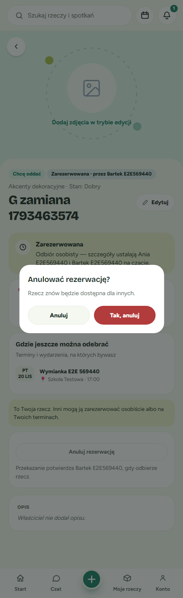

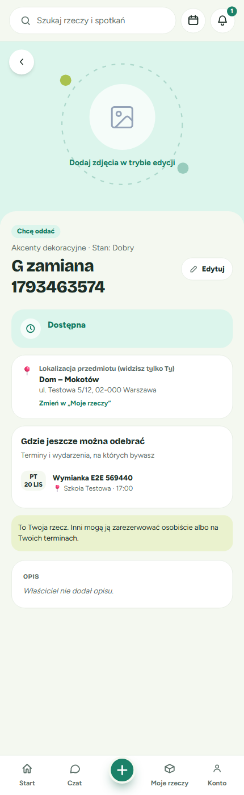

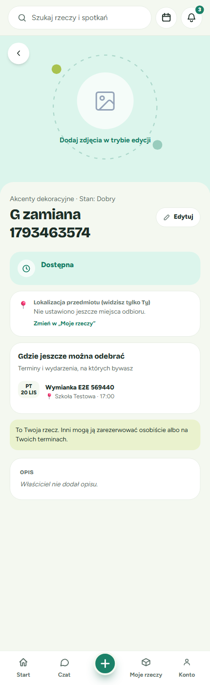
4.5 Reserved item seen by a logged-in non-party — ✅ Passed
- User story / acceptance criterion: R8.1, R8.3, R8.5
- Preconditions: C is logged in; the item is reserved by B.
| # | Action | Expected | Actual | Status |
|---|---|---|---|---|
| 1 | C opens the product page | "Zarezerwowana · przez Bartek…", "Ta rzecz jest zarezerwowana." | Both shown; party_reservation:null, by_me:false | ✅ |
| 2 | — | Both reserve actions aria-disabled with the hint; chat enabled | Both have aria-disabled="true" and describe "Ktoś już zarezerwował tę rzecz. Jeśli rezerwacja zostanie anulowana, znów będzie dostępna."; the chat is enabled | ✅ |
| 3 | C tries a PERSONAL take (API) | 409 "Ta rzecz jest już zajęta" | 409 with that message | ✅ |
- Issues observed: None observed.
- Evidence:
screenshots/10-product-reserved-stranger.png - Acceptance criteria checklist:
- ☑ Reserver name shown to logged-in viewers
- ☑ Non-party actions disabled with the hint, chat kept

4.6 Anonymous product page — ✅ Passed
- User story / acceptance criterion: R2.2, R5.3, R5.5; mockup
screen:product-anonymous - Preconditions: Logged out.
| # | Action | Expected | Actual | Status |
|---|---|---|---|---|
| 1 | Open the available SWAP item | No location block; context list; gate | No "Lokalizacja przedmiotu" and no place name in the HTML; /actions.location = null; the context list is shown; "Chcesz tę rzecz? Zaloguj się, żeby zarezerwować lub napisać do właściciela." with links "Zaloguj się" / "Załóż konto" (returnTo set) | ✅ |
| 2 | — | Anonymous cache header | Cache-Control: public, max-age=0, s-maxage=60, Vary: Authorization | ✅ |
| 3 | Open the reserved item | "Zarezerwowana" without a name | Badge "Zarezerwowana" (no name). Disabled actions and the chat are shown; clicking the chat opens the account gate "Załóż konto, żeby napisać" | ✅ |
- Issues observed: None observed.
- Evidence:
screenshots/20-product-anonymous.png,screenshots/21-product-reserved-anonymous-orgpath.png,screenshots/22-anon-reserved-chat-gate.png - Acceptance criteria checklist:
- ☑ No location for anonymous viewers
- ☑ Login/register gate
- ☑ Reserved badge without a name


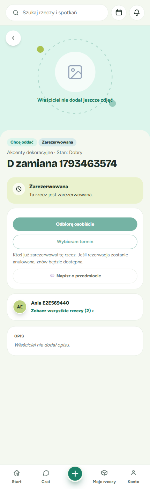

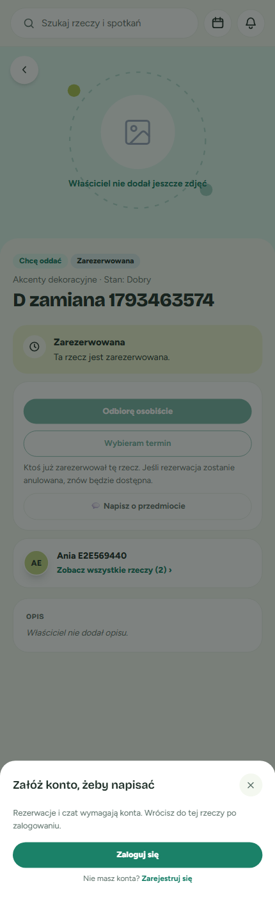
4.7 Owner view (address, "(widzisz tylko Ty)", 🔒 Prywatny) — ✅ Passed
- User story / acceptance criterion: R2.2 (OWN), R5.3, R5.11, R12.4; mockup
screen:product-own - Preconditions: A is logged in and has a location set.
| # | Action | Expected | Actual | Status |
|---|---|---|---|---|
| 1 | Open the PRIVATE item | Full address, "(widzisz tylko Ty)", "Zmień w „Moje rzeczy”", 🔒 badge, private copy | "Lokalizacja przedmiotu (widzisz tylko Ty) / Dom – Mokotów / ul. Testowa 5/12, 02-000 Warszawa / Zmień w „Moje rzeczy”"; badges "Chcę oddać" + "🔒 Prywatny"; "To Twoja rzecz. … Prywatna — widzą ją tylko osoby z Twoich prywatnych grup." | ✅ |
| 2 | — | No public contexts for a PRIVATE item (R13.5) | No context list is shown (the term's circle is PUBLIC) | ✅ |
| 3 | Open the PUBLIC GIFT item | Same block, no 🔒 badge; contexts "na których bywasz" | As expected; visibility:"PUBLIC"; Cache-Control: private, no-store | ✅ |
- Issues observed: None observed.
- Evidence:
screenshots/03-product-own-private.png,screenshots/04-product-own-public.png - Acceptance criteria checklist:
- ☑ Full address shown to the owner only
- ☑ 🔒 Prywatny badge and visibility line


4.8 Term page tiles — ⚠️ Passed with issues
- User story / acceptance criterion: R6.1–R6.4, R8.1, R8.4; mockup
screen:term-participant-items - Preconditions: The term page of A's PUBLIC circle; the "D zamiana" item is reserved by B; the PRIVATE item is listed by A.
| # | Action | Expected | Actual | Status |
|---|---|---|---|---|
| 1 | B opens the term page | Intent pills, "przez Ciebie", no take buttons | "D zamiana · Chcę oddać · Zarezerwowana · przez Ciebie", "G oddam · Chcę się zamienić"; 0 take buttons | ✅ |
| 2 | C opens it | "Zarezerwowana · przez Bartek…" | As expected | ✅ |
| 3 | Anonymous | "Zarezerwowana" only; by_name:null | As expected; /access → public, max-age=0, s-maxage=60; logged in → private, no-store | ✅ |
| 4 | — | Whole tile is one link with no ?term/?event | Each tile is a single <a> to /k-715bcc2e8805/product/{id}, with no query | ⚠️ |
| 5 | — | PRIVATE item absent | Not in /access for anonymous or logged-in viewers | ✅ |
- Issues observed: The link is org-slug-scoped (
/<slug>/product/:id), not a plain/product/:id. This matches the spec (R5.9organizerItemPath), so it is recorded as a variance, not a defect (§8). - Evidence:
screenshots/17-term-page-logged-in-B.png,screenshots/18-term-page-logged-in-stranger.png,screenshots/19-term-page-anonymous.png - Acceptance criteria checklist:
- ☑ Intent badges "Chcę oddać"/"Chcę się zamienić"
- ☑ Reserved badge naming rules
- ☑ No take buttons; tile links carry no context query

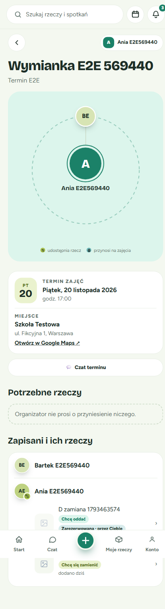


4.9 Owner items page — ✅ Passed
- User story / acceptance criterion: R6.4, R8.1, R10.4; mockup
screen:owner-items-anonymous - Preconditions: A's items (2 public listed, 1 reserved, 1 private).
| # | Action | Expected | Actual | Status |
|---|---|---|---|---|
| 1 | Anonymous /<party-id>/items | Tabs "Wszystkie / Chcę oddać / Chcę się zamienić"; GIFT count includes reserved; private excluded | "Wszystkie 2 · Chcę oddać 1 · Chcę się zamienić 1"; counts {GIFT:1, SWAP:1}, total 2; the private item is absent | ✅ |
| 2 | — | Reserved badge without a name; plain /product/:id links | "Zarezerwowana"; links /product/{id} | ✅ |
| 3 | C on /<org-slug>/items | "przez Bartek…" | "Zarezerwowana · przez Bartek E2E569440" | ✅ |
- Issues observed: None observed.
- Evidence:
screenshots/23-owner-items-anonymous.png,screenshots/28-owner-items-logged-in.png - Acceptance criteria checklist:
- ☑ Counts match the mode-filtered list (reserved included)
- ☑ PRIVATE items are not listed


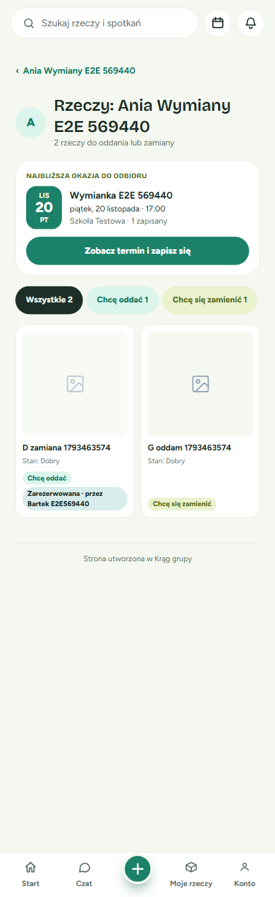
4.10 Organizer page counts, tabs and tiles — ⚠️ Passed with issues
- User story / acceptance criterion: R10.1–R10.3, R8.2, R8.4; mockup
screen:organizer-exchange-board - Preconditions: A's organization "ania-wymiany-e2e-569440" with the EXCHANGE layout (and briefly CLASSIC).
| # | Action | Expected | Actual | Status |
|---|---|---|---|---|
| 1 | Anonymous, EXCHANGE | Counts GIFT/SWAP available only + RESERVED | counts {GIFT:0, SWAP:1, RESERVED:1}; tabs "Wszystkie 2 · Chcę oddać 0 (disabled) · Chcę się zamienić 1 · Zarezerwowane 1" | ✅ |
| 2 | Click each tab | Tabs filter consistently with the counts | "Chcę się zamienić" → [G oddam]; "Zarezerwowane" → [D zamiana]; "Wszystkie" → both | ✅ |
| 3 | CLASSIC layout, logged in as C | ExchangeCountsBlock "N Chcę oddać · N Chcę się zamienić · N Zarezerwowane" | "0 Chcę oddać · 1 Chcę się zamienić · 1 Zarezerwowane" | ✅ |
| 4 | Logged in as C, EXCHANGE | "Zarezerwowana · przez Bartek…" on the board and in recent items; private, no-store | As expected | ✅ |
| 5 | Mobile 430px | All tabs visible | The tab strip scrolls horizontally and "Zarezerwowane" is off-screen | ⚠️ |
- Issues observed: Cosmetic §5.4 C1 (tab overflow) and §5.4 C2 (no counts tiles in the EXCHANGE layout).
- Evidence:
screenshots/24-organizer-page-anonymous.png,screenshots/25-organizer-tab-reserved.png,screenshots/26-organizer-classic-counts-logged-in.png,screenshots/27-organizer-exchange-logged-in.png - Acceptance criteria checklist:
- ☑ Organizer counts Chcę oddać / Chcę się zamienić / Zarezerwowane
- ☑ Tabs consistent with the counts
- ☑ Personalised cache headers

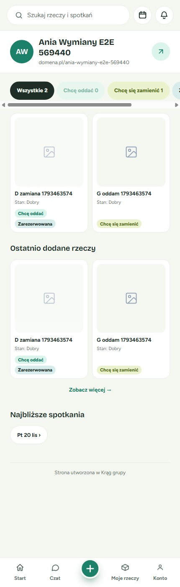


4.11 PRIVATE item gating — ✅ Passed
- User story / acceptance criterion: R13.3, R13.4, R3.5 (404-before-403/409)
- Preconditions: The "F oferta" item is PRIVATE; A has no PRIVATE circle; C is logged in.
| # | Action | Expected | Actual | Status |
|---|---|---|---|---|
| 1 | C opens /product/{private} | 404 page | /details 404, /actions 404; the page shows "Nie znaleziono tej rzeczy." | ✅ |
| 2 | C POST /take PERSONAL | 404 | 404 | ✅ |
| 3 | C GET /inventory-items/{id}, /history, /balance; anonymous /details | 404 | All 404 | ✅ |
| 4 | Public lists | Absent | Absent from the term /access, the organizer exchange and recent items, the owner items page, and items_total (3 → excludes private) | ✅ |
- Issues observed: None observed.
- Evidence:
screenshots/11-private-item-stranger-404.png - Acceptance criteria checklist:
- ☑ A stranger gets 404 on every read path and on take
- ☑ Absent from every public page

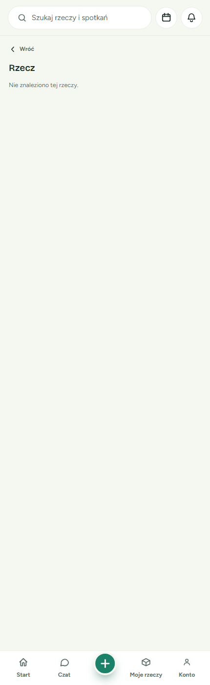
4.12 API contract spot checks — ✅ Passed
- User story / acceptance criterion: R3.3, R3.5, R11.1, R8.2
- Preconditions: B and C tokens.
| # | Action | Expected | Actual | Status |
|---|---|---|---|---|
| 1 | B takes the SWAP item with reservation_type:"GIFT" through TERM | 409 mode not offered | 409 "Ten sposób wzięcia rzeczy nie został zaoferowany" | ✅ |
| 2 | C proposes through a TERM it is not eligible for | 403 | 403 | ✅ |
| 3 | PERSONAL context with an id | 400 fieldErrors | 400 fieldErrors.context = "…Odbiór osobisty nie ma identyfikatora" | ✅ |
| 4 | C GET /api/reservations?item_id= on B's reservation | [] | [] | ✅ |
| 5 | Cache headers (/actions, /access, organizer) | Logged in private, no-store; anonymous public, max-age=0, s-maxage=60; Vary: Authorization | As expected on all three | ✅ |
- Issues observed: None observed.
- Evidence: inline (network responses captured during the run)
- Acceptance criteria checklist:
- ☑ Error codes as specified
- ☑ Reservation reads restricted to parties
5. Discrepancies
5.1 Critical critical
None observed.
5.2 Major major
None observed.
5.3 Minor minor
M1: own view of an unlisted item still says it can be reserved
- Spec requirement: R5.11, the own-view copy "To Twoja rzecz. Inni mogą ją zarezerwować osobiście albo na Twoich terminach."
- Expected: This copy describes a listed item. An item with no mode (for example one the receiver just got after a confirm) cannot be reserved by others.
- Actual: After B confirmed the handover, B's product page for the now-unlisted item shows "Dostępna" and "Inni mogą ją zarezerwować…".
/actions.modeis null. - Evidence:
screenshots/16-after-confirm.png - Root cause hypothesis: The
ownview renders the R5.11 sentence without checkingmode !== null. - User impact: A new owner may think the item is already offered when it is not.
- Recommended fix: When
mode === null, show a hint such as "Ustaw tryb w „Moje rzeczy”, żeby inni mogli ją zarezerwować." instead. - Workaround: The owner sets the mode in Moje rzeczy.
5.4 Cosmetic cosmetic
C1: organizer EXCHANGE tab strip overflows on mobile
- Spec requirement: R10.3, four tabs; mockup
screen:organizer-exchange-board - Expected: All four tabs are reachable at a glance, as in the mockup.
- Actual: At 430px the strip scrolls horizontally and "Zarezerwowane 1" is cut off.
- Evidence:
screenshots/27-organizer-exchange-logged-in.png - Root cause hypothesis: The fourth tab, plus counts in the labels, exceeds the width of the existing chip row.
- User impact: The reserved tab is easy to miss on phones.
- Recommended fix: Wrap the tabs or shorten the labels on narrow screens.
- Workaround: Scroll the strip horizontally.
C2: EXCHANGE layout has no counts tiles above the board
- Spec requirement: R10.2; the mockup shows "3 Chcę oddać / 4 Chcę się zamienić / 4 Zarezerwowane" tiles above the tabs
- Expected: Count tiles plus tabs, as in the mockup.
- Actual: In EXCHANGE the counts appear only inside the tab labels. The ExchangeCountsBlock tiles render in CLASSIC/SCHEDULE/CIRCLES (verified in CLASSIC).
- Evidence:
screenshots/24-organizer-page-anonymous.png,screenshots/26-organizer-classic-counts-logged-in.png - Root cause hypothesis: The layout registry does not include
exchange-countsin EXCHANGE. This layout composition probably predates the task. - User impact: None functionally; the numbers are visible in the tabs.
- Recommended fix: Confirm with design, or add
exchange-countsto the EXCHANGE layout. - Workaround: n/a
C3: GIFT label in the "Wybierz termin odbioru" sheet
- Spec requirement: The
screen:sheet-choose-termannotation says "GIFT: button 'Rezerwuję na ten termin'" - Expected: "Rezerwuję na ten termin"
- Actual: "Rezerwuję"
- Evidence:
screenshots/06-sheet-choose-term.png - Root cause hypothesis: The label was shortened during implementation (the spec R5.6 only says "the primary button reserves").
- User impact: Negligible.
- Recommended fix: Align with the mockup if desired.
- Workaround: n/a
6. Console & Network Errors
| Source (file:line) | Message | Frequency | Severity | Impact |
|---|---|---|---|---|
network /api/organizations/mine | 404 (organizer without an organization) | 8 | Cosmetic | Expected; existing behaviour before the organization was created |
network /api/inventory-items/{private}/details, /actions, /history, /balance, /{id}, /take | 404 | 9 | Cosmetic | Expected: the visibility gate (R13.4) |
network /api/organizations/public/k-…, /api/groups/public/organizers/k-… | 404 for a derived slug with no organization | 3 | Cosmetic | Expected; the test navigated there deliberately |
There were no JavaScript errors or warnings, and the backend log has no 5xx responses or tracebacks.
7. Spec Alignment
- Fully implemented:
- R1 inventory location (GET/PUT, picker, persistence)
- R2
/actionsshape: - viewer-shaped location;
- contexts with
eligible; personal_pickup_available;party_reservation.- R3 single take/propose endpoint, with the error codes sampled (400/403/404/409)
- R4 personal context: personal reservation, immediate confirm/cancel
- R5 product page states:
- own;
- anonymous;
- choose;
- reserved (party and non-party);
- both sheets;
- chat opens on success.
- R6 tiles: intent badges, single link, no take buttons
- R7/R8 reserved items stay listed:
- badge naming rules (name / "przez Ciebie" / anonymous without a name);
- personalised cache headers.
- R10 counts on the organizer page (available-only plus RESERVED) and on the owner items page (reserved included)
- R11
/api/reservations?item_id=limited to parties - R12 visibility toggle (always sends the mode; a mode-only change keeps visibility; hint copy)
- R13 PRIVATE gating:
- 404 on the read paths and on take;
- excluded from public lists and
items_total; - no public contexts offered.
- Partially implemented: None. (C2 is a layout-composition choice, not a missing requirement.)
- Not implemented: None observed.
- Extra (unspecified) behavior:
- The giver's "Anuluj rezerwację" asks for confirmation in an
alertdialog. "Potwierdzam przekazanie" runs without a confirmation step. - An anonymous viewer who clicks the chat on a reserved item gets the account gate "Załóż konto, żeby napisać".
8. Variances from Plan
- Test data was created through the public API, not through the UI. Exceptions: the inventory location and the visibility toggle were set in the UI (scenario 4.1), and the first personal reservation was made in the UI (4.3).
- The second personal reservation of the GIFT item (used to test the receiver's confirm) and the reservation of the "D zamiana" tile item were made through
POST /api/items/{id}/takewith B's token. - A PRIVATE item with a shared PRIVATE circle (the positive path of
can_view_itemfor a member) was not exercised. Only the stranger 404 path and the owner path were covered. - Event contexts were not seeded. Only a TERM context was shown and tested.
- The organization was created through the API (
/api/organizations/mine) to reach the organizer page. The layout was switched to CLASSIC to see ExchangeCountsBlock, then back to EXCHANGE. - Tile links point to
/<org-slug>/product/:idrather than the plain/product/:idthe brief expected. This is consistent with spec R5.9. - The "Potwierdzam przekazanie" flow has no confirmation dialog, so no
15-*.pngscreenshot exists.
9. Evaluation Against Exit Criteria
| Criterion (from spec) | Status | Evidence |
|---|---|---|
| The product page is the single surface to reserve: Odbiorę osobiście / Wybieram termin / Napisz o przedmiocie | ✅ | 4.2, screenshots/05-product-logged-in-3-actions.png |
| Parties confirm/cancel on the product page (C1) | ✅ | 4.4, screenshots/09-product-reserved-receiver.png, screenshots/13-cancel-confirm-dialog.png |
| Chat opens right after a personal reservation | ✅ | 4.3, screenshots/08-personal-reserve-chat-opened.png |
| Location name only for others; full address for the owner; none for anonymous viewers | ✅ | 4.2, 4.6, 4.7 |
| Tiles: intent badge, reserved badge with the name rule, single link, no take buttons | ✅ | 4.8, 4.9, 4.10 |
| Organizer counts GIFT/SWAP available-only + RESERVED; owner counts include reserved | ✅ | 4.9, 4.10 |
| PRIVATE items: 404 for strangers, absent from public pages | ✅ | 4.11 |
| Personalised responses not shared-cached | ✅ | 4.12 |
10. Recommendations
- Must fix before merge: None.
- Should fix soon: §5.3 M1 (own view of an unlisted item).
- Nice-to-have: §5.4 C1 (tab overflow), §5.4 C2 (EXCHANGE counts tiles), §5.4 C3 (sheet button label).
11. Artifacts
- Screenshots:
verification/screenshots/(30 files) - Visual-fidelity report:
verification/visual-fidelity.md - Console log dump: inline in §6
12. Conclusion
Verdict: GO WITH CAVEATS. Every scenario in the brief passed against the running app, and every requirement exercised (R1–R13) behaves as specified, including the privacy gates and the personalised cache headers. The remaining items are 1 Minor copy issue and 3 Cosmetic layout/label points, none of which block use. Recommendation: merge, and track M1 (and optionally C1–C3) as a follow-up.